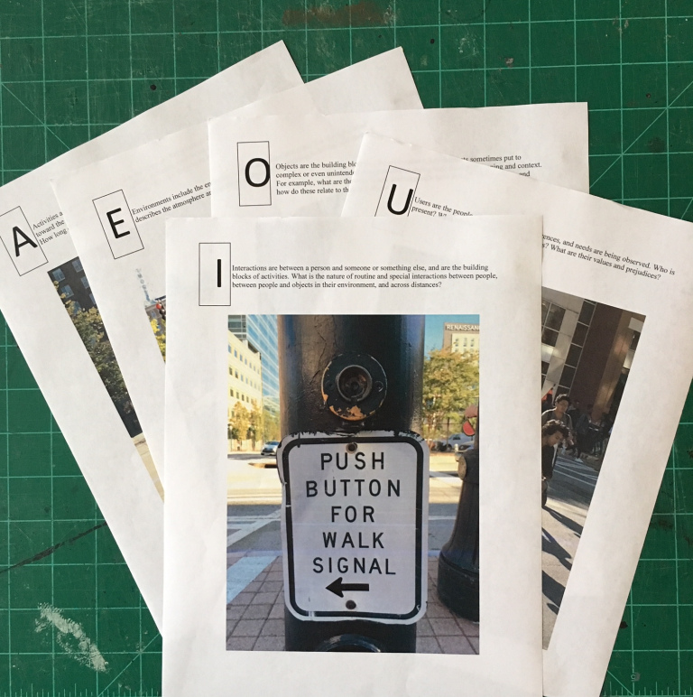

For this project, I was to work with in a group of six researching a transitional space of our choice. “Transitional space” was loosely defined and open to interpretation so that we could explore varied environments and situations. During our first brainstorming session, we came up with ideas such as hair salons, churches, swimming pools, and a whole host of other interesting transitional spaces.
In the end, we decided on crosswalks, particularly the Barnes and Noble crosswalk. This transitional space was highly accessible to us since the majority of us spent our time at a college campus in the middle of an urban setting where there were crosswalks galore. We also believed that there was a great variety of quantifiable behaviors and interactions that we could observe from this environment as opposed to areas such swimming pools where interactions may be limited due to the contexts and social spaces which surround them.
After deciding on our transitional space, the group of six was told to split up into subgroups of three so that each group could independently study the space and compare results at the project’s end. My subgroup consisted of Colin Strickland, Anuraj Bhatnagar, and myself; we worked closely over the span of two months to explore our transitional space.
The project itself was split into two phases. The first phase was dedicated to the logistic method which synonymous with “traditional” scientific research and has an emphasis on objectivity and systematic methods. This section of the project required us to choose three quantitative research techniques from Universal Methods of Design by Martin and Harington. We were then supposed to use our selected methods to conduct research on our transitional space, compile and analyze our findings, and present them to the class. The same process was repeated for the second phase of the project which focused on the operational method and qualitative data, known for utilizing subjective and nuanced perspectives.
While we did this, we snapped a few photos of the environment around us, namely to capture the objects that are distinct to crosswalks such as pedestrian signals and signs. We also conducted a few impromptu interviews asking some pedestrians how they knew when it was safe to cross the street. Some responses were, “Use your smarts.” and “Do what everyone else is doing.” While interviews are not a part of Participant Observation, we felt that diverging from the path would give us some interesting data points that we would be able to use later in the A E I O U Method and our Phase I presentation.
With this section of the project, we were to choose three logistic and quantitative research methods. To choose our methods, we went through Universal Methods of Design and selected a few that we thought would could work within the context of scientific research. This first list of research methods included the A E I O U Method, Behavioral Mapping, Fly-On-The- Wall Observation, Participant Observation, and Task Analysis. From these selected few, we narrowed down to a list of three methods: The A E I O U Method, Behavioral Mapping, and Participant Observation.
We found that these three methods were the most appropriate for our purposes since the each of them allowed us to deconstruct the act of crossing the street to its constituent parts to be studied and then construct conclusions and results grounded in our research. The other methods were not chosen mostly due to the fact that they did not afford for the deconstruction and construction of data or we concluded that they would not yield any in-depth results.
We went out to study the crosswalk by observing people as a part of Behavioral Mapping. To us, this was an excellent method to use since it centered around location-based observations that were to be captured using a variety of media The three of us stood in an empty conference room overlooking the crosswalk and began recording a video of a few crossing cycles, taking note of points of interest such as street signs, dogs on leashes, people seeking shade, and people holding beverages.

Next, we performed Participant Observation which is a technique where researchers immerse themselves in the behaviors, interactions, and culture of the observed. In other words, my teammates and I were going to cross the street several times to get into the mental space of a pedestrian making their way across the road. We chose this method since one of our goals was to understand the crosswalk from a user’s perspective in order to gain insights on decision-making, specifically when someone decided whether it was safe to cross the street or not. There were interesting observations we made of ourselves, such has “bracing” against the street to prepare us to cross or trying to predict when the traffic lights would change so that we could cross.
While we did this, we snapped a few photos of the environment around us, namely to capture the objects that are distinct to crosswalks such as pedestrian signals and signs. We also conducted a few impromptu interviews asking some pedestrians how they knew when it was safe to cross the street. Some responses were, “Use your smarts.” and “Do what everyone else is doing.” While interviews are not a part of Participant Observation, we felt that diverging from the path would give us some interesting data points that we would be able to use later in the A E I O U Method and our Phase I presentation.
When our data collection was done, it was time to organize it into coherent categories using the A E I O U Method. It was also during this part of the project where our research question emerged. We noticed interesting behaviors regarding non-automatic vehicles such as bicycles and scooters when they attempted to cross the street. Some of the personal vehicles would act as pedestrians and lawfully walk their vehicles across the crosswalk and wait for the pedestrian signals while others would just zoom by. We wanted to study this behavior more, so we asked, “How do personal vehicles (skateboards, bicycles, scooters, and mopeds) decide whether they behave like pedestrians or automobiles?” While a research question was not a requirement of the project, my teammates and I thought it necessary to create one and pursue it so that we could have a guiding basis for our research.
We found that these three methods were the most appropriate for our purposes since the each of them allowed us to deconstruct the act of crossing the street to its constituent parts to be studied and then construct conclusions and results grounded in our research. The other methods were not chosen mostly due to the fact that they did not afford for the deconstruction and construction of data or we concluded that they would not yield any in-depth results.
Once we were able to compile our data, we presented our findings and the steps we took in order to obtain them. We introduced our transitional space of interest and our research methods and justified why we chose them instead of alternatives. Then we presented our initial discoveries which include our impromptu interview notes, observations on non-automated vehicle behavior, and quantifiable measurements such as the timer on the pedestrian signal.

Through the process of documenting these factors, we encountered an interesting case study illustrated below in which three people using personal vehicles cross the street. Here we have two instances of illegal street crossing by a bicyclist (red) and a scooterist (purple) by just riding their vehicles across alongside a bicyclist who crosses the street legally (blue) by walking their vehicle across.
The instructions for this project were intentionally ambiguous to simulate the nature of research. While this is not an excuse, this ambiguity did affect the way we interpreted the assignment which caused us to make some mistakes throughout the process. For one, we did not have a research question at the beginning of this phase namely because we were unfamiliar with the nuances of crosswalks and what we wanted to learn from it. Additionally, the methods that we chose did not always generate the most quantitative data. After the fact, I noticed that some of our data, such as the interviews, were rather subjective and could not be measured by an empirical standard as was the objective of the logistic method. If we were to do this project again, I would imagine that it would make things go a lot smoother if we focused on developing an intriguing research question before beginning our research and selected methods that resulted in more quantifiable data.
With a deeper understanding of the purpose of the project, we were now better equipped to tackle the second phase of the project which involves studying the operational method. This method, which emphasizes subjectivity and nuanced experiences, explores the contexts where those perspectives are developed. The operational method differs from the logistic method since it seeks to understand why individual data may be unique rather than trying to standardize it.
We selected research methods for this phase of the project the same way we did with the first phase. Again, we went through Universal Design Methods and selected the methods we thought would fit best. From there, we refined our decisions and selected three that we thought would produce the most nuanced data which include Role-Playing, Directed Storytelling, and Graffiti Wall.
With this method, we created scenarios for people participants to act out. These scenarios were meant to simulate possible interactions while crossing with the sidewalk. Admittedly, the scenarios we designed were dramatized with the inclusion of collisions and near-misses. We chose to approach them this way because we thought that they would produce noteworthy results. There was a total of five scenarios which we acted out with the help of some volunteers. At the end of the acting, we convened to reflect on our experiences with the scenario. We were free to give our opinions on why someone would act the way that they would.
After the role-playing and reflection was over, my group and I went through the responses and looked for any patterns and trends. We noticed interesting commonalities between the reflections such as people’s ignorance to the law and the lack of sympathy for adults who are oblivious to their surroundings.

With this portion of qualitive data collection, we conducted interviews in the hopes that they would provide us with engaging stories that we could obtain. Since we wanted to talk to people in an environment that was relevant to our crosswalk of interest, the Barnes and Noble crosswalk, we chose to interview people near the bike racks outside of the Tech Square Research Building (TSRB). Not only would the population there be guaranteed to have experience with bikes and other personal vehicles, they would also be familiar with the crosswalk. In order to conduct the interview, we created a set of questions related to crosswalks, car accidents, bike accidents, and the laws surrounding those situations. Some examples include “Are you more worried about your skills as a driver or other people’s skills?” and, “When you’re in a foreign place walking around versus here on campus, are you more aware or differently aware of traffic?” These questions were important to us to ask because they were critical in our understanding of the underlying cognitive processes that could affect decision-making in the context of walking, driving, and riding. We were able to interview five people and record their answers with their permission. Afterwards, each interview was transcribed into a text format so that we could detect trends and note compelling points.
In this part of the data collection, we diverted from the guidelines for the Graffiti Wall as detailed in Universal Methods of Design. Instead of placing the Graffiti Wall in a physical space and leaving it there for people to engage with as they pleased, we decided that it would be better to carry the board around and ask people to write on it. We chose to do this because of the host of permissions for leaving such an item in a public space that we did not have the resources to obtain. Additionally, there were weather, vandalism, and theft concerns that could have hindered our data collection.
Outside of this deviation, the Graffiti Wall itself is in accordance to the guidelines. At the top of the board, we attached evocative imagery and a prompt that was a means of giving the participants context in order to provide relevant data. This method was the most effective in obtaining intriguing responses due to the open-ended nature of the prompt: “That one time in a crosswalk…” and the casual nature of the Graffiti Wall as opposed to Role-Playing and Directed Storytelling, which were affected by our biases and expectations.
As we were compiling the data for our presentation, we wanted to emulate the chaos of the data collection process. A compelling way for us to do so was to create a script of sorts which highlighted certain data points that were relevant to the trends that we found in the data. This way, we could detail the over-arching trends in our data while simultaneously giving the audience snippets of the data itself without boring them.
We concluded that once we gave participants the space to do so, they will produce unexpected and delightful information. Because of these results, some new areas of exploration arose such as crosswalks as a social space and re-designing the crosswalk.
Many of our issues were due to the fact that we were unaware of the standard processes and differences between the logistic and the operational method. During the logistic method phase, it would have been more effective to create a research question that would result in the analysis of quantifiable data. This would be a guide for our data collection which would create a basis for understanding our transitional space. Since we thought of a research question later in the process of Phase I, this affected the way we approached Phase II since we kept the question to guide our research for Phase II. The nature of the operational method is to be more inviting of distinct perspectives and varying responses; however, the usage of a research question in our process hampered the kinds of data that we were able to obtain. While what we collected in Role-Playing and Directed Storytelling were still compelling perspectives, we most likely could have collected more diverse data had we not stuck so closely to the research question. We only realize it after the fact, when we deployed our Graffiti Wall with great success.
Colin's process book can be found here, and Anuraj's can be found here.